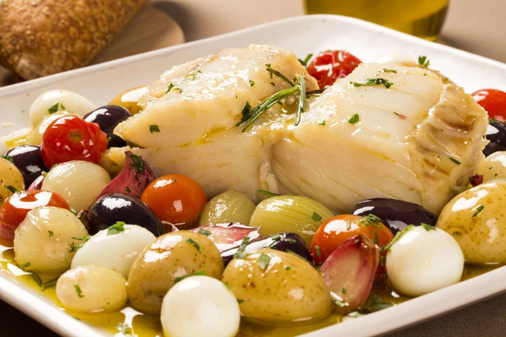
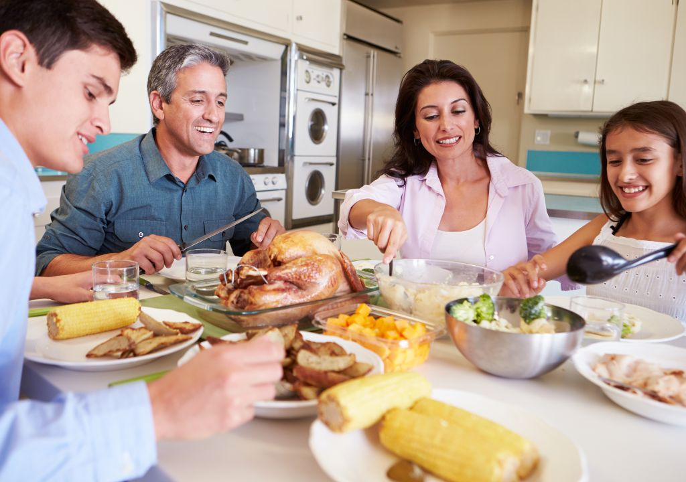
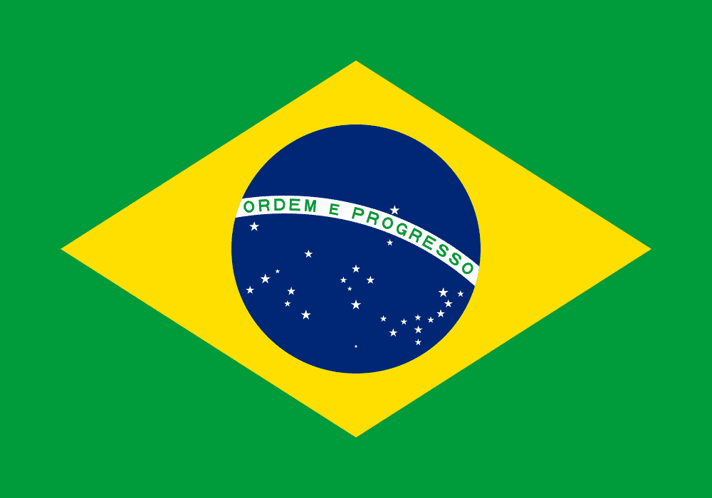

No Brasil, a Páscoa é uma das datas mais aguardadas do ano, mesclando uma forte devoção religiosa com um aspecto comercial vibrante. O país, que possui uma das maiores populações católicas do mundo, inicia suas celebrações na Quaresma, culminando na Semana Santa. Na Sexta-feira Santa, é tradição abster-se de carne vermelha, dando lugar ao tradicional prato de bacalhau ou outros peixes, reunindo a família em torno da mesa.
O aspecto religioso é muito forte em cidades históricas, como Ouro Preto (MG) e Nova Jerusalém (PE), onde acontecem as famosas encenações da Paixão de Cristo e a confecção dos belíssimos tapetes de serragem nas ruas. Essas procissões atraem milhares de fiéis e turistas, mantendo vivas as tradições que foram trazidas pelos colonizadores portugueses há séculos.
Por outro lado, o domingo de Páscoa é marcado pela euforia das crianças com a troca de ovos de chocolate. Os supermercados brasileiros ficam repletos de "parreiras" de ovos pendurados, um espetáculo visual único do país. Além disso, brincadeiras como a caça aos ovinhos deixam pegadas de coelho pela casa, garantindo a alegria dos mais novos após o grande almoço em família.

